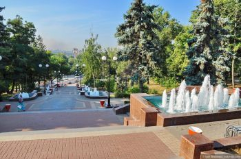
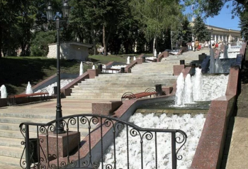

Каскад фонтанов (Липецк)
В сердце Липецка, неподалеку от главной Соборной площади располагаются каскады цветомузыкальных фонтанов, которые ведут к Петровскому проезду. Рядом раскинулся знаменитый Нижний парк.
Задолго до строительства фонтанов вдоль лестницы, ведущей к Петровскому проезду, были расположены клумбы, которые в течение теплого периода времени радовали гостей и жителей города цветами. Но главный архитектор и автор идеи Мирон Мордухович решил создать нечто новое и необычное в этом месте. Так в 2007 году воды каскадного фонтана украсили парадную лестницу. Основную параллель архитектор проводил между горной рекой, которая быстро спускается вниз. Но местные жители и гости все чаще сравнивают Липецкий каскад с фонтанами Петергофа. Открытие необычной достопримечательности было приурочено ко дню города Липецк.
Изображения:


Каскад фонтанов на карте:
|